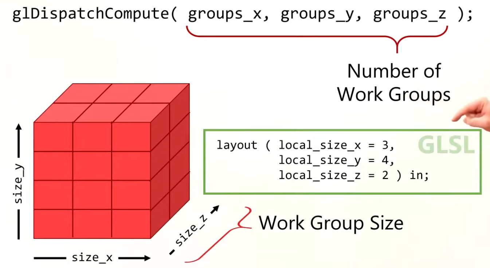

Compute Pipeline
-
-
Cool.
-
A compute shader is used to determine an array of positions, then render each point in a graphics pipeline using POINTS as the primitive.
-
-
Poor explanation, with possibly useful code, in Vulkan .
-
The video's code may be useful based on what I saw.
-
Though, the video itself is meh.
-
-
A compute shader maps pretty well of how a GPU operates; which is not really the case of a Graphics Pipeline.
Use cases
-
Calculate images from complex postprocessing chains.
-
Raytracing or other non-geometry drawing.
Creation
-
We need to create first the pipeline layout for it, and then hook a single shader module for its code.
-
Once its built, we can execute the compute shader by first calling
VkCmdBindPipelineand then callingVkCmdDispatch.
Using
-
You generally want to use a memory barrier after the dispatch of the compute shader, so you wait for the compute shader to finish to finally access its data; if that's what you want to do.
-
In OpenGL the
GL_SHADER_STORAGE_BARRIERis used.
-
Workgroup
-
vkCmdDispatch. -
For an image, I had the decision to only use 2 of those dimensions, that way we can execute one workgroup per group of pixels in the image.
-
When executing compute shaders, they will get executed in groups of N lanes/threads.
-
The most difficult part is the decision of partitioning the compute shader between Workgroups and Local Size.
-
Local Size is also called Workgroup Size, representing the number of threads inside each Workgroup.
-
 .
-
The code is in OpenGL, but the concept is the same.
-
-
The size of the local_size should be ideally related to the size of a warp/wavefront from the GPU, so you don't waste processing power.
-
For
layout(local_size_x = 3, local_size_y = 4, local_size_z = 2), you'll use3 * 4 * 2 = 24threads, which is not ideal for a NVIDIA warp size. -
.
GLSL Built-in Variables

Examples
-
The shader code is a very simple shader that will create a gradient from the coordinates of the global invocation ID.
//GLSL version to use
#version 460
//size of a workgroup for compute
layout (local_size_x = 16, local_size_y = 16) in;
//descriptor bindings for the pipeline
layout(rgba16f,set = 0, binding = 0) uniform image2D image;
void main()
{
ivec2 texelCoord = ivec2(gl_GlobalInvocationID.xy);
ivec2 size = imageSize(image);
if(texelCoord.x < size.x && texelCoord.y < size.y)
{
vec4 color = vec4(0.0, 0.0, 0.0, 1.0);
if(gl_LocalInvocationID.x != 0 && gl_LocalInvocationID.y != 0)
{
color.x = float(texelCoord.x)/(size.x);
color.y = float(texelCoord.y)/(size.y);
}
imageStore(image, texelCoord, color);
}
}
-
Inside the shader itself, we can see
layout (local_size_x = 16, local_size_y = 16) in;(z=1 by default).-
By doing that, we are setting the size of a single workgroup.
-
This means that for every work unit from the
vkCmdDispatch, we will have 16x16 lanes of execution, which works well to write into a 16x16 pixel square.
-
-
The next layout statement is for the shader input through descriptor sets. We are setting a single image2D as set 0 and binding 0 within that set.
-
If local invocation ID is 0 on either X or Y, we will just default to black. This is going to create a grid that will directly display our shader workgroup invocations.
-
On the shader code, we can access what the lane index is through
gl_LocalInvocationIDvariable. -
There is also
gl_GlobalInvocationIDandgl_WorkGroupID. By using those variables we can find out what pixel exactly do we write from each lane.